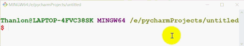

内置模块
Python 内置库(模块)是 Python 内部提供的库，可以帮助我们实现一些基本的功能。我们安装 Python 后可以直接使用，不需要再次安装。可以通过 sys.argv 来查看 Python 所有内置库。库可以是一个文件，也可以是一个文件夹。
1. sys
sys模块中包含Python解释器相关的数据。如引用次数：
sys.getrefcount()：获取一个值的应用计数
''''
sys模块中，pthon解释器相关的数据
获取一个值的应用计数
'''
import sys
a = [1,2,3]
b=a
print(sys.getrefcount(a))
'''
3
'''
sys.getrecursionlimit()：获取python默认支持的递归数量
''''
sys模块中，pthon解释器相关的数据
python默认支持的递归数量
'''
import sys
print(sys.getrecursionlimit())
'''
1000
'''
sys.stdout.write()：输出，print函数内部会调用它
''''
输入输出：print函数内部会调用
'''
import sys
# 不能是数字，只能是字符串。默认不换行，print函数内部会调用它。
sys.stdout.write('520')
sys.stdout.write('kiku')
'''
520kiku
'''
例1：进度条的实现：
# \n：换行
# \t：制表符
# \r：回到当前行的起始位置
print('thanlon', end='')
print('kiku')
print('thanlon\r', end='')
print('kiku')
'''
thanlonkiku
kiku
'''
# coding:utf-8
'''
使用\r做进度条
'''
import time
for i in range(1, 101):
msg = '%s%%\r' % i
print(msg, end='')
time.sleep(0.05)
'''
100%
'''
例2：读文件的进度条：
# coding:utf-8
'''
进度条
'''
import os
# 读取文件的大小(字节大小)
file_size = os.stat('video.mp4').st_size
# 一点一点读文件
read_size = 0
with open('video.mp4', mode='rb') as f1, open('tmp.mp4', mode='wb')as f2:
while read_size < file_size:
chunk = f1.read(1024) # 每次最多读取1024字节
f2.write(chunk)
read_size += len(chunk)
v = int(read_size / file_size * 100)
print('%s%%\r' % v, end='')

sys.argv：获取用户的执行脚本的路径
# coding:utf-8
import sys
print(sys.argv)
'''
['E:/pycharmProjects/untitled/test.py']
'''
# coding:utf-8
'''
让用户执行脚本传入要删除的文件路径，在内部帮助用户将目录删除
'''
import sys
'''
获取用户执行的脚本时，传入参数
如：D:\Python37\python.exe E:/pycharmProjects/untitled/test.py D:/test（参数是“D:/test”）
sys.argv = ['E:/pycharmProjects/untitled/test.py', 'D:/test']
'''
# 获取参数
path = sys.argv[1] # path =D:/test
# 删除文件目录
import shutil
shutil.rmtree(path)
sys.path：Python导入模块，会按照 sys.path 中的路径依次查找模块
import sys
for i in sys.path:
print(i)
'''
E:\pycharmProjects\practice # 执行py文件会向sys.path中添加一个路径，可忽略。D:\Python37\python.exe E:/pycharmProjects/practice/test.py
E:\pycharmProjects\practice # 把当前pycharm中project路径也添加到sys.path中，可忽略。
C:\Program Files\JetBrains\PyCharm 2019.1.3\helpers\pycharm_display
D:\Python37\python37.zip
D:\Python37\DLLs
D:\Python37\lib
D:\Python37
D:\Python37\lib\site-packages
D:\Python37\lib\site-packages\turtle-0.0.2-py3.7.egg
D:\Python37\lib\site-packages\pyyaml-5.1.1-py3.7-win-amd64.egg
C:\Program Files\JetBrains\PyCharm 2019.1.3\helpers\pycharm_matplotlib_backend # pycharm中添加的，忽略
'''
内置模块会通过一下路径引入：
'''
D:\Python37\python37.zip
D:\Python37\DLLs
D:\Python37\lib
D:\Python37
D:\Python37\lib\site-packages
D:\Python37\lib\site-packages\turtle-0.0.2-py3.7.egg
D:\Python37\lib\site-packages\pyyaml-5.1.1-py3.7-win-amd64.egg
'''
我们不要把自定义的模块放到这些路径下，否则 Python 一旦卸载，这些模块也会被清除。当然我们可以临时把自定义模块的所在路径放到sys.path中：
import sys
# 如果我们自定义的模块在D:/下，可以把这个路径加入path的列表中
sys.path.append(r'D:/')
print(sys.path)
2. os
os模块可以获取与操作系统相关的数据，如：
os.path.exists()：文件是否存在
# coding:utf-8
import os
if os.path.exists('E:\pycharmProjects\practice\log.txt'):
print('yes!')
'''
yes!
'''
os.stat('xxx.txt').st_size：获取文件的大小
# coding:utf-8
import os
v = os.stat('E:\pycharmProjects\practice\log.txt').st_size # 字节
print(v) # 9
os.path.abspath(path)：获取文件的绝对路径 os.path.abspath(path)
# coding:utf-8
import os
path = 'log.txt'
v = os.path.abspath(path)
print(v)
'''
E:\pycharmProjects\practice\log.txt
'''
os.path.dirname(path)：获取文件或目录的上一级目录
# coding:utf-8
import os
path = 'E:\pycharmProjects\practice\log.txt'
path2 = 'E:\pycharmProjects\practice\test'
v = os.path.dirname(path) # E:\pycharmProjects\practice
v2 = os.path.dirname(path2) # E:\pycharmProjects\practice
print(v)
print(v2)
'''
E:\pycharmProjects\practice
E:\pycharmProjects
'''
os.listdir(r'E:\pycharmProjects\practice\test')：拼接路径
# coding:utf-8
import os
path = 'E:\pycharmProjects\practice'
file_name = 'log.txt'
res1 = os.path.join(file_name, path) # 注意顺序
res2 = os.path.join(path, file_name)
res3 = os.path.join(path, 'test', file_name)
print(res1)
print(res2)
print(res3)
'''
E:\pycharmProjects\practice
E:\pycharmProjects\practice\log.txt
E:\pycharmProjects\practice\test\log.txt
'''
例1：获取一个目录下所有的文件(第一层)：
# coding:utf-8
import os
res = os.listdir(r'E:\pycharmProjects\practice\test')
print(res) # ['index.html', 'log.txt']
for item in res:
print(item)
'''
index.html
log.txt
'''
例2：获取一个目录下所有的文件(所有层):
# coding:utf-8
import os
res = os.walk(r'E:\pycharmProjects\practice')
print(res) # <generator object walk at 0x00000237D9C85570>生成器
# coding:utf-8
import os
res = os.walk(r'E:\pycharmProjects\practice')
for item in res:
print(item)
'''
('E:\\pycharmProjects\\practice', ['.idea', 'test'], ['test.py'])
('E:\\pycharmProjects\\practice\\.idea', [], ['misc.xml', 'modules.xml', 'practice.iml', 'workspace.xml'])
('E:\\pycharmProjects\\practice\\test', [], ['index.html', 'log.txt'])
'''
# coding:utf-8
import os
res = os.walk(r'E:\pycharmProjects\practice')
for a, b, c in res:
'''
a:正在查看的目录
b:此目录下的文件夹
c:此目录下的文件
'''
print(a)
print(b)
print(c)
'''
E:\pycharmProjects\practice
['.idea', 'test']
['test.py']
E:\pycharmProjects\practice\.idea
[]
['misc.xml', 'modules.xml', 'practice.iml', 'workspace.xml']
E:\pycharmProjects\practice\test
[]
['index.html', 'log.txt']
'''
例2：找到目录中的所有文件（重点）：
# coding:utf-8
import os
res = os.walk(r'E:\pycharmProjects\practice')
for a, b, c in res:
'''
a:正在查看的目录
b:此目录下的文件夹
c:此目录下的文件
'''
# print(a)
# print(b)
# print(c)
'''
E:\pycharmProjects\practice
['.idea', 'test']
['test.py']
E:\pycharmProjects\practice\.idea
[]
['misc.xml', 'modules.xml', 'practice.iml', 'workspace.xml']
E:\pycharmProjects\practice\test
[]
['index.html', 'log.txt']
'''
for item in c:
path = os.path.join(a, item)
print(path)
'''
E:\pycharmProjects\practice\test.py
E:\pycharmProjects\practice\.idea\misc.xml
E:\pycharmProjects\practice\.idea\modules.xml
E:\pycharmProjects\practice\.idea\practice.iml
E:\pycharmProjects\practice\.idea\workspace.xml
E:\pycharmProjects\practice\test\index.html
E:\pycharmProjects\practice\test\log.txt
'''
3. json
我们都知道json格式是一个特殊的字符串，而Python内置的json模块可以对json格式的字符串进行序列化与反序列化，
json.dumps()：序列化，将Python的数据类型转换为json字符串的格式：
import json
v = [1, 2, 3, 'thanlon', True, {'name': 'thanlon', 'age': 23}]
# 序列化，将python的值转换为json格式的字符串
v2 = json.dumps(v)
print(v2)
'''
[1, 2, 3, "thanlon", true, {"name": "thanlon", "age": 23}]
'''
序列化元组，会把元组变为列表:
import json
v = ('thanlon', 23)
v2 = json.dumps(v)
print(type(v2), v2)
'''
<class 'str'> ["thanlon", 23]
'''
序列化集合，会报错：
import json
v = {'thanlon', 23}
# 反序列化，将json格式的字符串转换成python的数据类型
v2 = json.dumps(v)
'''
TypeError: Object of type set is not JSON serializable
'''
支持序列化成json字符串的数据类型有：
# 来自encoder.py文件
"""
+-------------------+---------------+
| Python | JSON |
+===================+===============+
| dict | object |
+-------------------+---------------+
| list, tuple | array |
+-------------------+---------------+
| str | string |
+-------------------+---------------+
| int, float | number |
+-------------------+---------------+
| True | true |
+-------------------+---------------+
| False | false |
+-------------------+---------------+
| None | null |
+-------------------+---------------+
"""
序列化字典和列表的时候，如果字典和列表中有中文，在序列化为json格式字符串时需要保留中文，需要设置 ensure_ascii = False:
# coding:utf-8
import json
v = {'k1': '奈何', '哈哈': 'v2'}
val = json.dumps(v) # 默认中文是unicode编码的
print(val)
'''
{"k1": "\u5948\u4f55", "\u54c8\u54c8": "v2"}
'''
val2 = json.dumps(v, ensure_ascii=False)
print(val2)
'''
{"k1": "奈何", "哈哈": "v2"}
'''
json.loads()：反序列化，将json字符串的格式转换成python的数据类型：
import json
v = '["thanlon",23]'
# 反序列化，将json格式的字符串转换成python的数据类型
v2 = json.loads(v)
print(v2)
'''
['thanlon', 23]
'''
json字符串中需要构造成列表或字典(包裹其它内容)才可以被反序列化，传一个值也要构造成列表或字典：
import json
'''
list或dict包裹的内容才可以反序列化，只有字符串是不可以反序列化的
'''
v = 'thanlon'
v2 = json.loads(v)
print(v2)
'''
json.decoder.JSONDecodeError: Expecting value: line 1 column 1 (char 0)
'''
json.dump()：序列化后写入文件
import json
v = [1, 2, 3]
f = open('test.txt', mode='w', encoding='utf-8')
val = json.dump(v, f)
print(val)
json.load()：读取文件数据并反序列化
import json
f = open('test.txt', mode='r', encoding='utf-8')
val = json.load(f)
print(val)
'''[1, 2, 3]'''
4. pickle
json所有编程语言通用，但是只能序列化基本数据类型list/dict/int；而pickle，除了socket对象，Python中所有东西都可以被序列化。但缺点是序列化的内容只能Python语言识别。
pickle.dumps()：用于将数据进行序列化，完成序列化后，会把数据转换成字节，是不可识别的
pickle.loads()：用于反序列化
例1：集合的序列化与反序列化
import pickle
v = {1, 2, 3, 4}
val = pickle.dumps(v)
print(val)
'''
b'\x80\x03cbuiltins\nset\nq\x00]q\x01(K\x01K\x02K\x03K\x04e\x85q\x02Rq\x03.'
'''
data = pickle.loads(val)
print(data)
'''
{1, 2, 3, 4}
'''
例2：函数的序列化与反序列化
# coding:utf-8
'''
函数的序列化与反序列化
'''
import pickle
def foo():
print('foo')
v1 = pickle.dumps(foo)
print(v1)
data = pickle.loads(v1)
data()
'''
b'\x80\x03c__main__\nfoo\nq\x00.'
foo
'''
dump函数：对数据进行序列化，同时可以保存序列化的内容（序列化后写入文件）
load函数：读取文件数据并反序列化
import pickle
v = {1, 2, 3, 4}
f1 = open('test.txt', mode='wb')
val = pickle.dump(v, f1) # 写入文件的时候写入的是字节类型的数据
f1.close()
f2 = open('test.txt', mode='rb')
data = pickle.load(f2)
f2.close()
print(data)
'''
{1, 2, 3, 4}
'''
5. shutil
os模块的删除可能会出问题。可能是权限的原因，文件夹中不能有文件，有文件就删除不了。而shutil模块，文件和目录一块被强制删除。
shutil.rmtree()：删除目录
import shutil
# 删除目录
shutil.rmtree('test') # 不能删除文件
shutil.move()：重命名目录和文件
import shutil
# 重命名目录和文件
shutil.move('test', 'tmp')
shutil.move('test.txt', 'tmp.txt')
shutil.make_archive()：压缩
import shutil
# 压缩
shutil.make_archive('test', 'zip', 'test') # "zip", "tar", "gztar","bztar", or "xztar"
# shutil.make_archive('test', 'zip', 'E:\pycharmProjects\\untitled\\test')
shutil.unpack_archive()：解压缩
import shutil
# 解压到当前目录
shutil.unpack_archive('test.zip', format='zip') # 解压到当前目录
# 解压到指定目录，指定目录如果没有，可以创建
shutil.unpack_archive('test.zip', extract_dir='D:\\newdir', format='zip')
shutil.copyfileobj()：将一个文件内容拷贝到另一个文件中
import shutil
# 将一个文件内容拷贝到另一个文件中
shutil.copyfileobj(open('test.txt', 'r'), open('log.txt', 'w'))
shutil.copyfile()：拷贝文件
import shutil
# 拷贝文件
shutil.copyfile('test.txt','log.txt')
6. datetime
datetime.datetime.now()：获取本地时间
import datetime
print(datetime.datetime.now())
"""
2020-09-08 04:53:24.150263
"""
datetime.datetime.utcnow()：获取UTC时间
import datetime
print(datetime.datetime.utcnow())
"""
2020-09-07 20:52:48.993547
"""
例1：datetime类型转换成字符串：
from datetime import datetime
ret = datetime.now().strftime('%Y-%m-%d %H:%M%S') # 字符串中不能使用中文字符
print(ret)
例2：字符串转datetime类型：
from datetime import datetime
ret = datetime.strptime('2019-8-1', '%Y-%m-%d')
print(ret, type(ret))
'''
2019-08-01 00:00:00 <class 'datetime.datetime'>
'''
例3：datetime类型转换为时间戳类型
from datetime import datetime
ret = datetime.now().timestamp()
print(ret, type(ret))
'''
1599514412.457368 <class 'float'>
'''
例4：时间戳转换为datatime类型的时间
from datetime import datetime
import time
ctime = time.time()
ret = datetime.fromtimestamp(ctime)
print(ret, type(ret))
'''
2020-09-08 05:36:03.675019 <class 'datetime.datetime'>
'''
datetime.timezone()：获取时区
datetime.datetime.utcnow()：时间的加减乘除 获取时区：
from datetime import timezone, timedelta
tz = timezone(timedelta(hours=1)) # 获取时区，hours表示一小时间隔，表示东一区。西一区可以使用-1
print(tz)
'''
UTC+01:00
'''
获取指定时区的时间：
from datetime import timezone, timedelta, datetime
tz = timezone(timedelta(hours=1)) # 获取时区
ret = datetime.now(tz) # 获取指定时区的时间
print(ret)
"""
2020-09-07 22:48:09.492275+01:00
"""
7. time
time.time()：获取时间戳
import time
print(time.time())
"""
1599507081.1925657
"""
time.time( ) 是1970年到现在的秒数。
time.sleep()：同步等待多少时间(单位秒)
import time
print(time.time())
time.sleep(5)
print(time.time()) # 5s后才执行这一条语句
"""
1599507258.6660213
1599507263.6695352
"""
time.timezone()：当前时区和格林尼治时间相差的秒数
import time
print(time.timezone)
"""
-28800
"""
8. logging
logging模块可以用来记录程序错误日志信息，
logging.basicConfig()：为日志系统做基础的配置
logging.dir()：获取logining模块的所有方法、属性
logging.error()：可以把错误信息写入到日志文件中
记录到错误日志是需要设置级别的，只有级别大于函数中设置的级别才可以被写入日志文件！
例子：
import logging
import traceback
"""
asctime：时间，name：用户，levelname：级别，module：运行的模块，message：相关信息
level>=30才会被写入日志文件，默认级别也就是30
"""
logger = logging.basicConfig(
filename='log.txt',
format='%(asctime)s - %(name)s - %(levelname)s - %(module)s：%(message)s',
datefmt='%Y-%m-%d %H:%M:%S',
level=30
)
def func():
a = 10
try:
b = a / 0
except Exception as e:
print(e) # division by zero
logging.error(str(e))
"""
# 只是将e的信息写入日志，这是不够的
2020-09-08 13:57:50 - root - ERROR - test：division by zero
"""
msg = traceback.format_exc()
logging.error(msg)
"""
# 需要更加具体到错误的代码行数
2020-09-08 13:59:04 - root - ERROR - test：Traceback (most recent call last):
File "/home/thanlon/test.py", line 20, in func
b = a / 0
ZeroDivisionError: division by zero
"""
if __name__ == '__main__':
func()
9. md5
简单的加密：如果撞库(将能想到的常用的密码加密，根据密文找明文)，会导致密码被泄露。
import hashlib
# 实例化对象
obj = hashlib.md5()
# 写入要加密的字节，python3中加密的必须是字节
obj.update('123456'.encode('utf-8'))
# 获取密文
ciphers = obj.hexdigest()
print(ciphers)
'''
e10adc3949ba59abbe56e057f20f883e
'''
加盐的加密：使用加盐可以解决撞库问题，增强密码的安全性。
import hashlib
# 实例化对象的时候顺便加盐
obj = hashlib.md5(b'thanlon') # 加盐
# 写入要加密的字节，python3中加密的必须是字节
obj.update('123456'.encode('utf-8'))
# 获取密文
ciphers = obj.hexdigest()
print(ciphers)
'''
1a8c227a607ed3c09a39f4b6a6df8869
'''
封装加密函数：
import hashlib
SALT = b'thanlon'
def md5(pwd):
"""
# 自定义MD5函数
:param pwd:
:return:
"""
obj = hashlib.md5(SALT)
# pwd是字符串，需要将其转换成字节
obj.update(pwd.encode('utf-8'))
# 返回密文
return obj.hexdigest()
print(md5('123456'))
"""
1a8c227a607ed3c09a39f4b6a6df8869
"""
10. getpass
可以让用户在终端输入密码不显示，注意只有在终端运行密码才会不显示：
import getpass
pwd = getpass.getpass('请输入密码：')
if pwd == '123456':
print('密码正确！')
11. csv
csv即逗号分隔值(comma-separated values)，有时也称为字符分割值，是以纯文本形式存储表格数据。
csv.reader()：csv文件的读取
import csv
with open('stuInfo.csv', 'r') as f:
data = csv.reader(f)
# print(data) # data is a object<_csv.reader object at 0x00000197FC4A4160>
for data_item in data:
print(data_item)
'''
['1', 'thanlon', '10000']
['2', 'Maria', '20000']
'''
for data_item in data:
print(data_item[0], data_item[1], data_item[2])
'''
1 thanlon 10000
2 Maria 20000
'''
csv.writer()：csv文件的写入
import csv
stu = ['3', 'Maria', 10000]
with open('stuInfo.csv', 'a', newline='') as f: # 如果没有加newline=''写入一行后空行
csv_writer = csv.writer(f, dialect='excel')
csv_writer.writerow(stu)
12. timeit
timeit模块可以用来计算代码执行的时间，
timeit.timeit()：返回的是timerit模块中Timer类的timeit方法的执行结果，timeit函数的源码
def timeit(stmt="pass", setup="pass", timer=default_timer,
number=default_number, globals=None):
"""Convenience function to create Timer object and call timeit method."""
return Timer(stmt, setup, timer, globals).timeit(number)
timeit函数参数：
| stmt | 用来放需要进行计算时间的代码，可以接收字符串的表达式、单个变量、函数 |
| setup | 可以用来传stmt的环境，例如import和一些参数之类的 |
| number | 执行是的次数，默认是1000000 |
| 其它 | 一般用不到，具体可查看文档 |
timeit.repeat()：返回的是timeit模块中Timer类repeat方法的执行结果，repeat函数的源码
def repeat(stmt="pass", setup="pass", timer=default_timer,
repeat=default_repeat, number=default_number, globals=None):
"""Convenience function to create Timer object and call repeat method."""
return Timer(stmt, setup, timer, globals).repeat(repeat, number)
repeat函数比timeit函数多一个repeat参数：
| stmt | 用来放需要进行计算时间的代码，可以接收字符串的表达式、单个变量、函数 |
| setup | 可以用来传stmt的环境，例如import和一些参数之类的 |
| number | 执行是的次数，默认是1000000 |
| repeat | 重复整个测试的个数，默认是3 |
| 其它 | 一般用不到，具体可查看文档 |
例1：测试列表推导式与for循环的执行时间(分别使用timeit函数和repeat函数)：
import timeit
stmt_list = '''
lst=[]
for i in range(10000):
lst.append(i)
'''
if __name__ == '__main__':
print(timeit.timeit('[i for i in range(10000)]', number=10000))
print(timeit.timeit(stmt_list, number=10000))
'''
3.346147895
5.789892938
'''
import timeit
stmt_list = '''
lst=[]
for i in range(10000):
lst.append(i)
'''
if __name__ == '__main__':
print(timeit.repeat('[i for i in range(10000)]', repeat=2, number=10000))
print(timeit.repeat(stmt_list, repeat=2, number=10000))
'''
[3.374952514, 3.4277178010000005]
[5.748379824000001, 5.8717959529999995]
'''